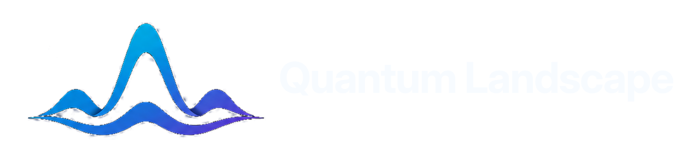
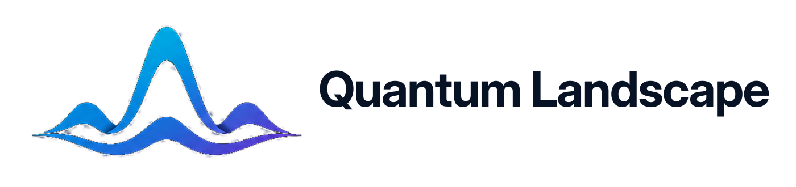
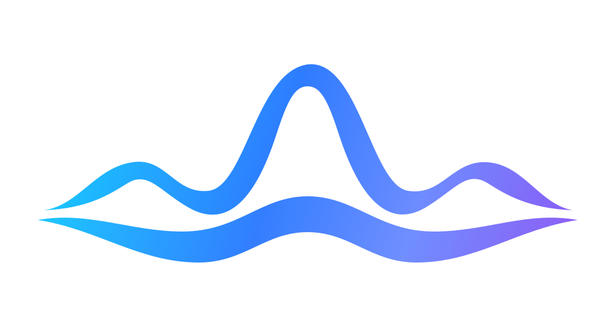

This pack avoids the broken thick-line SVG issue. Exact SVG files embed the cleaned transparent raster logo; pure vector files are explicitly marked as approximations.

svg/wordmark-horizontal-exact-dark-text.svg

svg/wordmark-horizontal-exact-light-text.svg
png/mark-transparent-tight-1024.png

svg/mark-vector-clean-approximation.svg